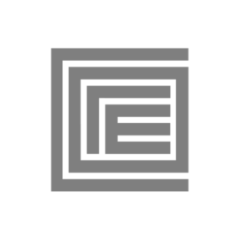

<title>مراجعة لوجو CORE</title>
<link rel="preconnect" href="https://fonts.googleapis.com">
<link rel="stylesheet" href="https://fonts.googleapis.com/css2?family=Montserrat:wght@600;800&family=Poppins:wght@600&family=Alexandria:wght@400;700;800&family=IBM+Plex+Sans+Arabic:wght@400;500;700&display=swap">
<style>
/* Layout: one reading column; specimen boards in brand colors (fixed), page chrome follows the viewer theme */
:root{
  --bg:#F2F2EF; --surface:#FFFFFF; --ink:#202020; --soft:#5A5F63; --line:#E0DFDA;
  --accent:#96661F; --good:#3E7A55; --bad:#B4483F;
  /* Core brand swatches, from the site's Elementor kit */
  --gold:#DAA14C; --gold-dk:#96661F; --char:#30373E; --night:#202020; --white:#FFFFFF;
  --f-head:'Alexandria','IBM Plex Sans Arabic',system-ui,sans-serif;
  --f-body:'IBM Plex Sans Arabic',system-ui,sans-serif;
  --f-mark:'Montserrat','Poppins',system-ui,sans-serif;
}
@media (prefers-color-scheme: dark){:root:not([data-theme="light"]){
  --bg:#17191C; --surface:#212428; --ink:#ECEBE7; --soft:#A6AAAD; --line:#33373C;
  --accent:#DAA14C; --good:#7DBB93; --bad:#E38B7F; color-scheme:dark}}
:root[data-theme="dark"]{
  --bg:#17191C; --surface:#212428; --ink:#ECEBE7; --soft:#A6AAAD; --line:#33373C;
  --accent:#DAA14C; --good:#7DBB93; --bad:#E38B7F; color-scheme:dark}

body{background:var(--bg);color:var(--ink);font-family:var(--f-body);font-size:16px;line-height:1.8;padding:0 16px}
.wrap{max-width:1000px;margin:0 auto;padding-block:40px 72px;display:flex;flex-direction:column;gap:56px}
h1,h2,h3{font-family:var(--f-head);text-wrap:balance;margin:0;line-height:1.4}
h1{font-size:clamp(28px,5vw,40px);font-weight:800}
h2{font-size:24px;font-weight:800}
h3{font-size:18px;font-weight:700}
p{margin:0;max-width:68ch}
.eyebrow{font-family:var(--f-head);font-weight:700;font-size:13px;color:var(--accent);letter-spacing:.02em}
.muted{color:var(--soft)}
section{display:flex;flex-direction:column;gap:20px}
.ltr{direction:ltr;unicode-bidi:isolate}
code{font-family:ui-monospace,Menlo,monospace;font-size:.85em;background:var(--surface);border:1px solid var(--line);border-radius:4px;padding:0 5px;direction:ltr;unicode-bidi:isolate}

/* boards: fixed brand grounds */
.board{border-radius:12px;display:flex;align-items:center;justify-content:center;min-height:170px;padding:34px 20px 24px;position:relative;min-width:0}
.board .tag{position:absolute;top:10px;inset-inline-start:14px;font-size:12px;opacity:.7}
.b-night{background:var(--night);color:#EDEDEA;--m-main:#FFFFFF;--m-core:var(--gold);--m-word:var(--gold);--m-sub:#FFFFFF}
.b-white{background:var(--white);color:var(--night);border:1px solid var(--line);--m-main:var(--char);--m-core:var(--gold);--m-word:var(--char);--m-sub:var(--gold-dk)}
.b-gold{background:var(--gold);color:var(--night);--m-main:var(--night);--m-core:var(--white);--m-word:var(--night);--m-sub:var(--night)}
.b-mono{background:var(--white);color:var(--night);border:1px solid var(--line);--m-main:var(--night);--m-core:var(--night);--m-word:var(--night);--m-sub:var(--night)}

.grid2{display:grid;grid-template-columns:repeat(auto-fit,minmax(min(100%,300px),1fr));gap:16px}
.grid3{display:grid;grid-template-columns:repeat(auto-fit,minmax(min(100%,220px),1fr));gap:12px}
.board img{max-width:100%;height:auto;display:block}

/* browser tab */
.tabwrap{border:1px solid var(--line);border-radius:10px;overflow:hidden;width:100%}
.tabbar{padding:8px 10px 0;display:flex;direction:ltr}
.tab{border-radius:8px 8px 0 0;padding:7px 12px;display:flex;align-items:center;gap:8px;font-size:13px;max-width:240px;min-width:0;font-family:system-ui,sans-serif}
.tab span{white-space:nowrap;overflow:hidden;text-overflow:ellipsis}
.tab img,.tab svg{flex:none;width:16px;height:16px}
.tb-light .tabbar{background:#DEE1E6}.tb-light .tab{background:#fff;color:#202124}
.tb-dark .tabbar{background:#202124}.tb-dark .tab{background:#35363A;color:#E8EAED}
.tabwrap .page{height:28px}.tb-light .page{background:#fff}.tb-dark .page{background:#35363A}

/* analysis */
.pw{background:var(--surface);border:1px solid var(--line);border-radius:12px;padding:22px;display:flex;flex-direction:column;gap:14px;min-width:0}
.pw h3{display:flex;align-items:center;gap:10px}
.dot{width:10px;height:10px;border-radius:50%;flex:none}
.pw ul{margin:0;padding:0;list-style:none;display:flex;flex-direction:column;gap:12px}
.pw li{padding-inline-start:16px;border-inline-start:2px solid var(--line)}
.pw li b{font-family:var(--f-head);font-weight:700;display:block}

.edits{margin:0;padding:0;list-style:none;counter-reset:e;display:flex;flex-direction:column}
.edits li{counter-increment:e;display:grid;grid-template-columns:40px 1fr;gap:12px;padding:12px 0;border-bottom:1px solid var(--line)}
.edits li::before{content:counter(e);font-family:var(--f-mark);font-weight:800;color:var(--accent);font-size:20px;line-height:1.6}
.edits b{font-family:var(--f-head)}

/* concepts */
.concept-head{display:flex;flex-wrap:wrap;align-items:center;gap:8px 12px}
.pill{font-family:var(--f-head);font-weight:700;font-size:12px;padding:2px 10px;border-radius:999px;background:var(--gold);color:var(--night)}
.boards{display:grid;grid-template-columns:3fr 2fr;gap:12px}
.boards .wide{grid-row:span 2;min-height:300px}
@media (max-width:680px){.boards{grid-template-columns:1fr}.boards .wide{grid-row:auto;min-height:220px}}

.lockup{display:flex;align-items:center;gap:.45em;direction:ltr}
.lockup svg{flex:none}
.stack{display:flex;flex-direction:column;align-items:stretch;line-height:1}
.stack .w{font-family:var(--f-mark);font-weight:800;color:var(--m-word);letter-spacing:.03em}
.stack .s{font-family:var(--f-mark);font-weight:600;color:var(--m-sub);letter-spacing:.52em;font-size:.2em;margin-top:.55em;padding-left:.15em}
.stack .ar{font-family:'Alexandria',sans-serif;font-weight:700;color:var(--m-sub);font-size:.24em;margin-top:.5em;direction:rtl;text-align:left}

.sizes{display:flex;align-items:flex-end;gap:16px;flex-wrap:wrap;justify-content:center}
.sizes figure{margin:0;display:flex;flex-direction:column;align-items:center;gap:6px;font-size:11px;opacity:.8}

.pc{display:grid;grid-template-columns:repeat(auto-fit,minmax(min(100%,260px),1fr));gap:12px;font-size:15px}
.pc div{min-width:0}
.pc b{font-family:var(--f-head);font-size:14px;display:block}
.pc .p b{color:var(--good)} .pc .c b{color:var(--bad)}

/* concept C word */
.cword{font-family:var(--f-mark);font-weight:800;color:var(--m-word);letter-spacing:.03em;display:inline-flex;align-items:center;line-height:1;direction:ltr}
.cword svg{width:.8em;height:.8em;margin:0 .02em}

/* color */
.sw{display:grid;grid-template-columns:repeat(auto-fit,minmax(min(100%,200px),1fr));gap:12px}
.sw figure{margin:0;border-radius:12px;overflow:hidden;border:1px solid var(--line);background:var(--surface)}
.sw .chip{height:76px;display:flex;align-items:center;justify-content:center;font-family:var(--f-mark);font-weight:800;font-size:18px}
.sw figcaption{padding:10px 12px;font-size:13px;line-height:1.6}
.sw figcaption b{font-family:var(--f-head);display:block;font-size:14px}
.num{font-variant-numeric:tabular-nums;direction:ltr;unicode-bidi:isolate;display:inline-block}

/* context */
.site{background:var(--night);border-radius:12px;overflow:hidden;--m-main:#fff;--m-core:var(--gold);--m-word:#fff;--m-sub:var(--gold)}
.site nav{display:flex;align-items:center;justify-content:space-between;gap:16px;padding:16px 22px;direction:ltr;flex-wrap:wrap}
.site nav ul{display:flex;gap:18px;list-style:none;margin:0;padding:0;font-family:'Poppins',sans-serif;font-size:13px;color:#cfcfcf;flex-wrap:wrap}
.site .hero{padding:36px 22px 40px;direction:ltr;font-family:'Poppins',sans-serif;color:#fff;border-top:1px solid #2f2f2f}
.site .hero h4{margin:0 0 6px;font-size:clamp(22px,4vw,32px);font-weight:600;line-height:1.25}
.site .hero p{color:#bdbdbd;font-size:14px}
.cards{display:grid;grid-template-columns:repeat(auto-fit,minmax(min(100%,280px),1fr));gap:16px}
.bcard{aspect-ratio:1.75;max-width:100%;border-radius:10px;display:flex;align-items:center;justify-content:center;position:relative;box-shadow:0 1px 0 rgba(0,0,0,.05)}
.bcard.back{justify-content:space-between;align-items:flex-end;padding:20px;direction:ltr;font-family:'Poppins',sans-serif;font-size:11px;line-height:1.6}
.sign{background:var(--night);border-radius:12px;padding:28px 24px;display:flex;flex-direction:column;align-items:center;gap:12px;--m-main:#fff;--m-core:var(--gold);--m-word:var(--gold);--m-sub:#fff}
.sign .arname{font-family:'Alexandria',sans-serif;font-weight:800;color:#fff;font-size:30px;line-height:1.2}

.next{background:var(--surface);border:1px solid var(--line);border-radius:12px;padding:22px;display:flex;flex-direction:column;gap:10px}
</style>

<svg width="0" height="0" style="position:absolute" aria-hidden="true">
  <!-- A: refined C / o / core -->
  <symbol id="mA" viewBox="0 0 100 100">
    <path d="M79.6 25.2 A38 38 0 1 0 79.6 74.8" fill="none" stroke-width="14" style="stroke:var(--m-main)"/>
    <circle cx="50" cy="50" r="20.5" fill="none" stroke-width="5" style="stroke:var(--m-main)"/>
    <circle cx="50" cy="50" r="10" style="fill:var(--m-core)"/>
  </symbol>
  <symbol id="mA-tile" viewBox="0 0 100 100">
    <rect width="100" height="100" rx="22" fill="#202020"/>
    <path d="M76 28 A31 31 0 1 0 76 72" fill="none" stroke="#fff" stroke-width="14"/>
    <circle cx="50" cy="50" r="12" fill="#DAA14C"/>
  </symbol>
  <!-- B: nested plan squares -->
  <symbol id="mB" viewBox="0 0 100 100">
    <path d="M90 9 H9 V91 H90" fill="none" stroke-width="9" style="stroke:var(--m-main)"/>
    <path d="M74 26 H26 V74 H74" fill="none" stroke-width="7" style="stroke:var(--m-main)"/>
    <rect x="40" y="40" width="20" height="20" style="fill:var(--m-core)"/>
  </symbol>
  <symbol id="mB-tile" viewBox="0 0 100 100">
    <rect width="100" height="100" rx="22" fill="#202020"/>
    <path d="M80 20 H20 V80 H80" fill="none" stroke="#fff" stroke-width="11"/>
    <rect x="39" y="39" width="22" height="22" fill="#DAA14C"/>
  </symbol>
  <!-- C: the O of CORE -->
  <symbol id="mC" viewBox="0 0 100 100">
    <circle cx="50" cy="50" r="40" fill="none" stroke-width="19" style="stroke:var(--m-word)"/>
    <circle cx="50" cy="50" r="13" style="fill:var(--m-core)"/>
  </symbol>
  <symbol id="mC-tile" viewBox="0 0 100 100">
    <rect width="100" height="100" rx="22" fill="#202020"/>
    <circle cx="50" cy="50" r="28" fill="none" stroke="#fff" stroke-width="13"/>
    <circle cx="50" cy="50" r="10" fill="#DAA14C"/>
  </symbol>
</svg>

<main class="wrap" dir="rtl" lang="ar">

  <header style="display:flex;flex-direction:column;gap:12px">
    <span class="eyebrow">مراجعة هوية · Core Innovation · <span class="ltr">ci-eg.com</span></span>
    <h1>لوجو CORE: قراءة نقدية وثلاث اتجاهات للتطوير</h1>
    <p class="muted">الملفات اتسحبت من الموقع مباشرة: لوجو الهيدر <code>yellow-png-Recovered-1-1.png</code> وأيقونة المتصفح <code>cropped-black-opacity-50-.png</code>. الألوان والخطوط من إعدادات Elementor في الموقع: ذهبي <span class="num">#DAA14C</span>، فحمي <span class="num">#30373E</span>، وخط Poppins.</p>
  </header>

  <!-- CURRENT -->
  <section>
    <span class="eyebrow">الوضع الحالي</span>
    <h2>اللوجو زي ما هو على الموقع</h2>
    <div class="grid2">
      <div class="board b-night"><span class="tag">على خلفية غامقة (زي الهيدر)</span></div>
      <div class="board b-white"><span class="tag">نفس الملف على خلفية بيضا</span></div>
    </div>
    <div class="grid2">
      <div class="board b-white" style="flex-direction:column;gap:14px">
        <span class="tag">أيقونة المتصفح الحالية</span>
        <div class="sizes">
          <figure>270 (الأصل)</figure>
          <figure>32</figure>
          <figure>16</figure>
        </div>
      </div>
      <div style="display:flex;flex-direction:column;gap:12px;justify-content:center">
        <div class="tabwrap tb-light"><div class="tabbar"><div class="tab"><span>Core innovation</span></div></div><div class="page"></div></div>
        <div class="tabwrap tb-dark"><div class="tabbar"><div class="tab"><span>Core innovation</span></div></div><div class="page"></div></div>
        <p class="muted" style="font-size:14px">الأيقونة أسود بشفافية 50%. في المتصفح الفاتح باهتة، وفي الغامق شبه مختفية.</p>
      </div>
    </div>
  </section>

  <!-- ANALYSIS -->
  <section>
    <span class="eyebrow">التحليل</span>
    <h2>نقاط القوة والضعف</h2>
    <div class="grid2">
      <div class="pw">
        <h3><span class="dot" style="background:var(--good)"></span>نقاط القوة</h3>
        <ul>
          <li><b>الفكرة الأساسية ذكية</b>حرف C جواه O وجواهم «re»، يعني كلمة CORE متداخلة لحد المركز. الشكل نفسه بيقول «في القلب» وده نفس معنى الاسم والشعار.</li>
          <li><b>الذهبي مناسب للمجال</b>الذهبي <span class="num">#DAA14C</span> مع الأسود بيدّي إحساس فخامة يليق بشركة تصميم داخلي وتشطيب، وواضح جدًا على الخلفيات الغامقة (تباين <span class="num">7.1:1</span>).</li>
          <li><b>كلمة CORE قوية</b>أربع حروف كابيتال بخط هندسي تقيل، سهلة القراءة من بعيد ومناسبة لليافطات وجوانب العربيات.</li>
          <li><b>أيقونة المتصفح فيها فكرة معمارية</b>المربعات المتداخلة شبه مسقط أفقي لحيطان، وده مرتبط بالتصميم الداخلي أكتر من الدايرة.</li>
        </ul>
      </div>
      <div class="pw">
        <h3><span class="dot" style="background:var(--bad)"></span>نقاط الضعف</h3>
        <ul>
          <li><b>الشعار مكتوب مرتين</b>«Innovation Begins at the Core» حوالين الدايرة وتحت الكلمة كمان. التكرار بيزحم اللوجو ويضعف الاتنين.</li>
          <li><b>النص الدائري مش مقروء</b>صغير جدًا في الهيدر، والجزء اللي تحت مقلوب على راسه. وفي الأحجام الصغيرة بيتحول لخط رمادي.</li>
          <li><b>رمزين مختلفين لنفس الشركة</b>الهيدر فيه دايرة، والمتصفح فيه مربعات. العميل مش هيربط بينهم، والهوية بتبان مش متماسكة.</li>
          <li><b>الرمز أبيض في ملف شفاف</b>على أي خلفية فاتحة (عرض أسعار، ورق مطبوع، خلفية بيضا في الموقع) نص اللوجو بيختفي ويفضل الكلام الذهبي بس.</li>
          <li><b>خطين مختلفين جوه اللوجو</b>«re» صغيرة بشكل مختلف عن CORE الكابيتال، فالرمز والكلمة شكلهم جايين من مصدرين.</li>
          <li><b>الذهبي ضعيف على الأبيض</b>تباين <span class="num">2.3:1</span> بس، فسطر الشعار الصغير بيبقى صعب يتقري على الورق الأبيض.</li>
          <li><b>كلمة Innovation ضايعة</b>اسم الشركة Core Innovation، لكن اللوجو بيقول CORE بس، و Innovation موجودة جوه جملة الشعار.</li>
          <li><b>مفيش نسخة عربي</b>مع فرع الرياض، اليافطات التجارية في السعودية عادة لازم يبقى عليها الاسم بالعربي، ومفيش نسخة جاهزة.</li>
          <li><b>الملف PNG مش فيكتور</b>852×442 بهوامش فاضية كبيرة. هيتكسّر في الطباعة الكبيرة واليافطات.</li>
        </ul>
      </div>
    </div>
  </section>

  <!-- EDITS -->
  <section>
    <span class="eyebrow">التعديلات المقترحة</span>
    <h2>اللي محتاج يتغيّر</h2>
    <ol class="edits">
      <li><div><b>رمز واحد بس للشركة.</b> نفس الرمز في الهيدر والمتصفح والسوشيال واليافطة. المقترح: نحتفظ بفكرة التداخل ونلغي الرمز التاني.</div></li>
      <li><div><b>شيل النص الدائري.</b> الشعار يتكتب مرة واحدة، بعيد عن اللوجو، في الأماكن الكبيرة بس (بروفايل الشركة، أول صفحة في الموقع).</div></li>
      <li><div><b>«القلب» يبقى ذهبي.</b> بدل حروف «re» في النص، نقطة ذهبي في المركز. أبسط، بتتقري في 16 بكسل، والذهبي ياخد معنى: ده الـ Core.</div></li>
      <li><div><b>خط واحد للوجو كله.</b> CORE و INNOVATION بنفس العيلة (Montserrat أو Poppins اللي على الموقع)، و INNOVATION بمسافات واسعة تحت CORE بنفس عرضها.</div></li>
      <li><div><b>نسخ جاهزة لكل خلفية.</b> رمز أبيض على الغامق، فحمي على الفاتح، أسود على الذهبي، ونسخة لون واحد للختم والحفر على الخشب.</div></li>
      <li><div><b>ذهبي غامق للنص على الأبيض.</b> <span class="num">#96661F</span> بتباين <span class="num">5:1</span> للكلام الصغير، والذهبي الأصلي يفضل للمساحات الكبيرة والخلفيات الغامقة.</div></li>
      <li><div><b>نسخة عربي «كور إنوفيشن».</b> بخط Alexandria، مقاسها مظبوط على الكلمة الإنجليزي، لليافطات في الرياض.</div></li>
      <li><div><b>تسليم الملفات SVG و PDF.</b> فيكتور لكل النسخ، وأيقونة متصفح مصممة مخصوص للأحجام الصغيرة.</div></li>
    </ol>
  </section>

  <!-- A -->
  <section>
    <div class="concept-head"><span class="eyebrow">الاتجاه أ</span><span class="pill">المُوصى به</span></div>
    <h2>تنقية الدايرة: C ثم O ثم القلب</h2>
    <p class="muted">نفس فكرة اللوجو الحالي من غير الزحمة: حرف C عريض، جواه حلقة رفيعة (O)، وفي المركز نقطة ذهبي. النص الدائري اتشال، والشكل كله بقى قلبه ذهبي.</p>
    <div class="boards">
      <div class="board b-night wide"><span class="tag">النسخة الأساسية</span>
        <div class="lockup" style="font-size:clamp(40px,8vw,64px)"><svg width="1.6em" height="1.6em" aria-hidden="true"><use href="#mA"/></svg><div class="stack"><span class="w">CORE</span><span class="s">INNOVATION</span></div></div>
      </div>
      <div class="board b-white"><span class="tag">على الأبيض</span>
        <div class="lockup" style="font-size:34px"><svg width="1.6em" height="1.6em" aria-hidden="true"><use href="#mA"/></svg><div class="stack"><span class="w">CORE</span><span class="s">INNOVATION</span></div></div>
      </div>
      <div class="board b-white"><span class="tag">الأحجام الصغيرة</span>
        <div class="sizes">
          <figure><svg width="64" height="64" aria-hidden="true"><use href="#mA-tile"/></svg>64</figure>
          <figure><svg width="32" height="32" aria-hidden="true"><use href="#mA-tile"/></svg>32</figure>
          <figure><svg width="16" height="16" aria-hidden="true"><use href="#mA-tile"/></svg>16</figure>
          <figure class="b-mono" style="border:0"><svg width="32" height="32" aria-hidden="true"><use href="#mA"/></svg>لون واحد</figure>
        </div>
      </div>
    </div>
    <div class="pc">
      <div class="p"><b>ليه ده الأقوى</b>محافظ على الفكرة اللي العملاء شافوها قبل كده، فمفيش خسارة في التعرّف على الشركة. ومعاه الرمز بقى مقروء في كل الأحجام وفي لونين بس.</div>
      <div class="c"><b>المخاطرة</b>الدواير المتداخلة شكل متكرر في شعارات التكنولوجيا. اللي بيميّزه هنا الـ C المفتوحة والنقطة الذهبي، فلازم الاتنين يفضلوا ثابتين في كل النسخ.</div>
    </div>
  </section>

  <!-- B -->
  <section>
    <div class="concept-head"><span class="eyebrow">الاتجاه ب</span></div>
    <h2>المسقط: نطوّر أيقونة المربعات</h2>
    <p class="muted">ناخد فكرة أيقونة المتصفح ونخليها الرمز الأساسي: مربعين على شكل C متداخلين زي حيطان في مسقط أفقي، وفي النص «غرفة» ذهبي هي القلب.</p>
    <div class="boards">
      <div class="board b-night wide"><span class="tag">النسخة الأساسية</span>
        <div class="lockup" style="font-size:clamp(40px,8vw,64px)"><svg width="1.5em" height="1.5em" aria-hidden="true"><use href="#mB"/></svg><div class="stack"><span class="w">CORE</span><span class="s">INNOVATION</span></div></div>
      </div>
      <div class="board b-white"><span class="tag">على الأبيض</span>
        <div class="lockup" style="font-size:34px"><svg width="1.5em" height="1.5em" aria-hidden="true"><use href="#mB"/></svg><div class="stack"><span class="w">CORE</span><span class="s">INNOVATION</span></div></div>
      </div>
      <div class="board b-white"><span class="tag">الأحجام الصغيرة</span>
        <div class="sizes">
          <figure><svg width="64" height="64" aria-hidden="true"><use href="#mB-tile"/></svg>64</figure>
          <figure><svg width="32" height="32" aria-hidden="true"><use href="#mB-tile"/></svg>32</figure>
          <figure><svg width="16" height="16" aria-hidden="true"><use href="#mB-tile"/></svg>16</figure>
        </div>
      </div>
    </div>
    <div class="pc">
      <div class="p"><b>الإيجابي</b>أقرب رمز لشغل الشركة الفعلي (تصميم داخلي وتشطيب)، وشكل مربع يتحفر بسهولة على الخشب والمعدن والزجاج.</div>
      <div class="c"><b>السلبي</b>تغيير أكبر عن اللوجو اللي العملاء متعودين عليه، ومحتاج إعادة تقديم للهوية.</div>
    </div>
  </section>

  <!-- C -->
  <section>
    <div class="concept-head"><span class="eyebrow">الاتجاه ج</span></div>
    <h2>القلب جوه الكلمة</h2>
    <p class="muted">من غير رمز منفصل: حرف O في CORE بيتحوّل لحلقة بنقطة ذهبي في نصها. والأيقونة الصغيرة هي الـ O لوحدها.</p>
    <div class="boards">
      <div class="board b-night wide"><span class="tag">النسخة الأساسية</span>
        <div class="stack" style="font-size:clamp(48px,10vw,84px);direction:ltr"><span class="cword">C<svg aria-hidden="true"><use href="#mC"/></svg>RE</span><span class="s" style="font-size:.19em">INNOVATION</span></div>
      </div>
      <div class="board b-white"><span class="tag">على الأبيض</span>
        <div class="stack" style="font-size:44px;direction:ltr"><span class="cword">C<svg aria-hidden="true"><use href="#mC"/></svg>RE</span><span class="s" style="font-size:.19em">INNOVATION</span></div>
      </div>
      <div class="board b-white"><span class="tag">الأحجام الصغيرة</span>
        <div class="sizes">
          <figure><svg width="64" height="64" aria-hidden="true"><use href="#mC-tile"/></svg>64</figure>
          <figure><svg width="32" height="32" aria-hidden="true"><use href="#mC-tile"/></svg>32</figure>
          <figure><svg width="16" height="16" aria-hidden="true"><use href="#mC-tile"/></svg>16</figure>
        </div>
      </div>
    </div>
    <div class="pc">
      <div class="p"><b>الإيجابي</b>أنضف وأبسط اتجاه، والكلمة نفسها بقت مملوكة ليك. مناسب جدًا لليافطات الطويلة وجوانب العربيات.</div>
      <div class="c"><b>السلبي</b>الأيقونة الصغيرة (حلقة ونقطة) عامة شوية لوحدها، وبتعتمد على إن الناس عارفة الكلمة.</div>
    </div>
  </section>

  <!-- COLOR -->
  <section>
    <span class="eyebrow">الألوان</span>
    <h2>نفس الألوان، بقواعد استخدام</h2>
    <div class="sw">
      <figure><div class="chip" style="background:#DAA14C;color:#202020">CORE</div><figcaption><b>ذهبي أساسي</b><span class="num">#DAA14C</span>. للمساحات الكبيرة وعلى الغامق. على الأبيض <span class="num">2.3:1</span>، فممنوع للكلام الصغير.</figcaption></figure>
      <figure><div class="chip" style="background:#fff;color:#96661F;border-bottom:1px solid #eee">Innovation</div><figcaption><b>ذهبي غامق (جديد)</b><span class="num">#96661F</span>. للنص الذهبي على الأبيض، تباين <span class="num">5:1</span>.</figcaption></figure>
      <figure><div class="chip" style="background:#30373E;color:#fff">CORE</div><figcaption><b>فحمي</b><span class="num">#30373E</span>. لون الرمز على الخلفيات الفاتحة بدل الأبيض.</figcaption></figure>
      <figure><div class="chip" style="background:#202020;color:#DAA14C">CORE</div><figcaption><b>ليلي</b><span class="num">#202020</span>. الخلفية الأساسية للهيدر واليافطات. الذهبي عليه <span class="num">7.1:1</span>.</figcaption></figure>
    </div>
  </section>

  <!-- CONTEXT -->
  <section>
    <span class="eyebrow">في الاستخدام</span>
    <h2>الاتجاه أ على الموقع والكارت واليافطة</h2>
    <div class="site">
      <nav>
        <div class="lockup" style="font-size:24px"><svg width="1.6em" height="1.6em" aria-hidden="true"><use href="#mA"/></svg><div class="stack"><span class="w">CORE</span><span class="s">INNOVATION</span></div></div>
        <ul><li>About</li><li>Services</li><li>Projects</li><li>Contact</li></ul>
      </nav>
      <div class="hero">
        <h4>Innovation begins at the core.</h4>
        <p>Design &amp; build · Interior design, fit-out, furniture and construction · Cairo · Riyadh</p>
      </div>
    </div>
    <div class="cards">
      <div class="bcard b-night"><div class="lockup" style="font-size:30px"><svg width="1.6em" height="1.6em" aria-hidden="true"><use href="#mA"/></svg><div class="stack"><span class="w">CORE</span><span class="s">INNOVATION</span></div></div></div>
      <div class="bcard back b-white">
        <div><b style="font-size:13px">Name Surname</b><br>Interior Designer<br><span style="color:#96661F">ci-eg.com</span></div>
        <svg width="34" height="34" aria-hidden="true"><use href="#mA"/></svg>
      </div>
      <div class="sign">
        <svg width="64" height="64" aria-hidden="true"><use href="#mA"/></svg>
        <div class="arname">كور إنوفيشن</div>
        <div class="stack" style="font-size:34px;direction:ltr;align-items:center"><span class="w">CORE</span><span class="s">INNOVATION</span></div>
      </div>
    </div>
    <p class="muted" style="font-size:14px">الكارت فيه اسم ووظيفة كمثال بس.</p>
  </section>

  <section class="next">
    <h3>الخطوة الجاية</h3>
    <p>اختار اتجاه، وأنا أطلّعلك الملفات النهائية SVG لكل النسخ (أفقي، رمز بس، عربي، لون واحد) وأيقونة المتصفح بالأحجام اللي ووردبريس محتاجها. ولو حابب نعدّل نسب أو خط قبلها، قولّي على الاتجاه وأنا أطلع منه نسختين تلاتة.</p>
  </section>
</main>
